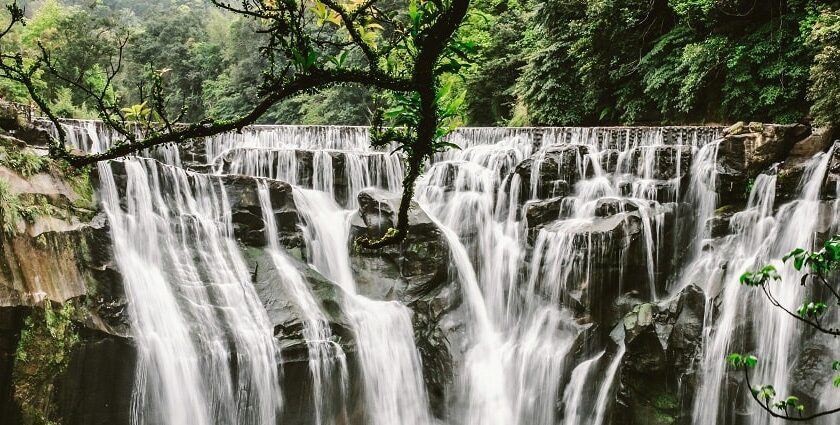

Meghalaya is a land where water doesn’t just flow — it performs. Thanks to heavy rainfall, misty hills, and deep
green valleys,
the state is packed with waterfalls that feel straight out of a fantasy novel. Every fall has its own mood: some
roar like thunder,
some quietly slide down rocks, and some suddenly appear after the monsoons like nature’s surprise gift.
Nohkalikai Falls is the show-stopper. Dropping from a dramatic cliff near Cherrapunji, it’s one of the tallest
plunge waterfalls in India.
Watching the water free-fall into a turquoise pool below is genuinely breathtaking — raw, powerful,
unforgettable.

My dream travel destination: Meghalaya
A land of waterfalls, living root bridges, and endless greenery.
About Meghalaya
Meghalaya is one of those places that feels like nature’s secret — calm, green, and unbelievably beautiful. It’s called “The Abode of Clouds” for a reason: you’ll literally see clouds drifting around you, waterfalls crashing everywhere, and tiny villages that look straight out of a storybook. Everything here feels pure, fresh, and soothing — the kind of place where you instantly relax.If you love scenic views, nature, and places that feel untouched and serene, Meghalaya is honestly a dream destination.
Top places to visit in Meghalaya
Shillong: the Scotland of the East

Shillong is the heart of Meghalaya — lively yet calm, full of cafés, pine trees, small lakes, and incredible viewpoints. The weather stays cool almost all year, and the city has a cozy mountain-town vibe that makes you instantly relax. Highlights: Ward’s Lake, Shillong Peak, Laitlum Canyon, Elephant Falls.
Cherrapunji – Land of Waterfalls & Misty Hills

Cherrapunji (Sohra) is famous for its dramatic cliffs, thick clouds, and waterfalls that fall from insane heights. The views honestly feel unreal — like you’re walking inside a giant cloud. Highlights: Nohkalikai Falls, Seven Sisters Falls, Arwah Caves.
Mawlynnong – Asia’s Cleanest Village

This village is unbelievably clean, green, and naturally beautiful. Every corner has flowers, bamboo houses, and well-maintained paths. Being here feels like stepping into a nature-themed fairy tale. Highlights: Sky View Tower, Living Root Bridge nearby, village walk.
Best months to visit Meghalaya
| Month | Weather | Best for |
|---|---|---|
| October–April | Clear & pleasant | Trekking, sightseeing |
| May–June | Rainy | Waterfall views |
| July–September | Heavy monsoon | Avoid travel |